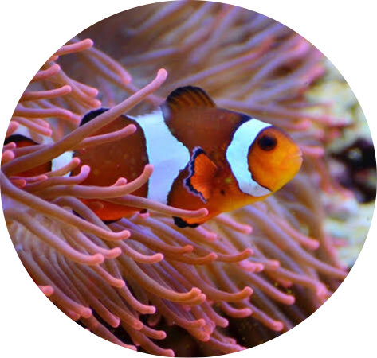
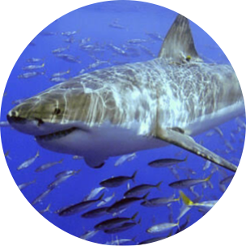
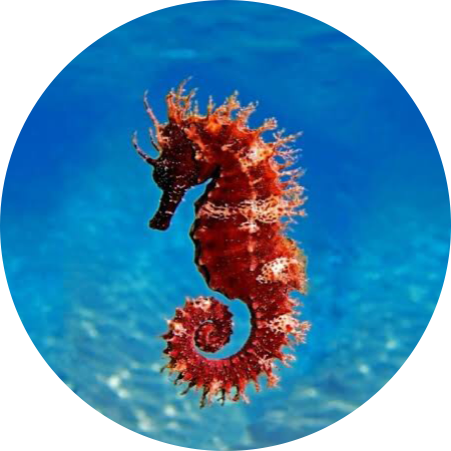
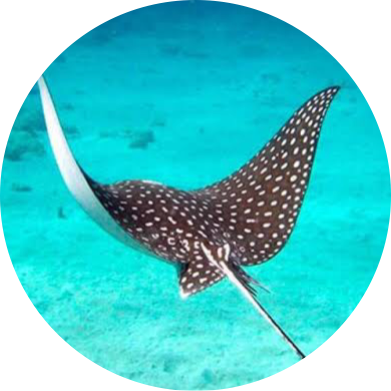
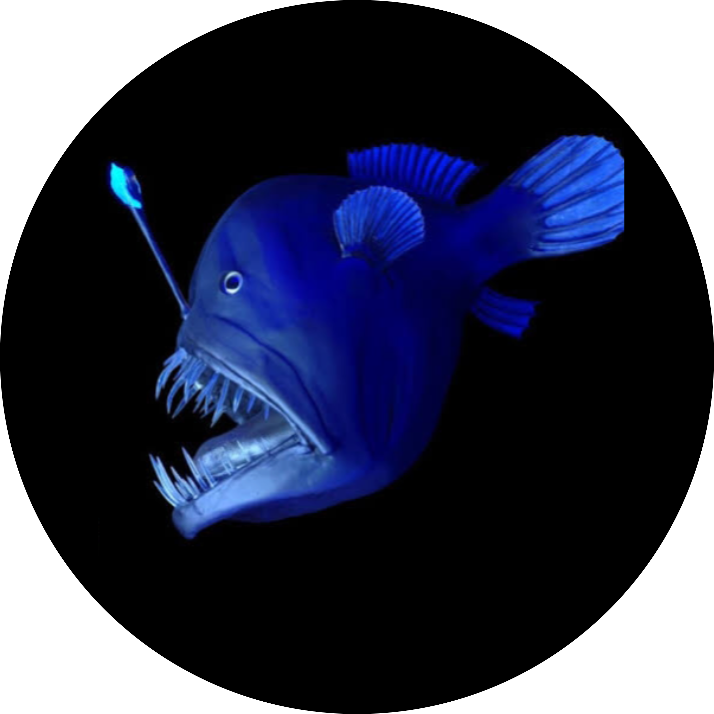

Os peixes são animais vertebrados, aquáticos e dotados de escamas que cobrem seus corpos, além de respiração branquial. São pecilotérmicos, o que significa que não regulam sua própria temperatura corporal. Encontrados tanto em água salgada quanto doce, os peixes têm uma história que remonta a aproximadamente 530 milhões de anos, originando-se durante o período Devoniano. Suas dietas podem variar; alguns são herbívoros, alimentando-se predominantemente de algas, enquanto outros são carnívoros, consumindo peixes e uma variedade de animais como moluscos e crustáceos. Os peixes podem apresentar comportamentos intrigantes. Por exemplo, o peixe-arqueiro, habitante de pântanos e arrozais, tem o hábito de nadar vagarosamente próximo à superfície. Subitamente, ao detectar um inseto voando sobre a água, o peixe dispara um jato de água, derruba a presa e a engole rapidamente.
A reprodução da maioria dos peixes ocorre através da desova. Durante este processo, a fêmea libera os óvulos em águas calmas, onde o macho os fecunda com seus espermatozoides. Os ovos fertilizados são então agrupados e envolvidos por uma substância gelatinosa. Embora muitos desses ovos sejam  consumidos por outros peixes, uma pequena porcentagem consegue se desenvolver e se metamorfosear em alevinos, ou seja, larvas de peixe. Em certas espécies de peixes, os filhotes se desenvolvem internamente no corpo da mãe, recebendo diretamente dela todos os nutrientes necessá-
rios para seu crescimento.
Por outro lado, os peixes cartilaginosos, como tubarões, arraias e quimeras, geralmente se reproduzem por fecundação interna. No macho, uma nadadeira especial chamada clásper  desempenha uma função similar à do pênis nos mamíferos.
Durante o pro-
cesso de reprodução, o macho introduz o clásper na cloaca da fêmea, onde ocorre a fecundação. As fêmeas dessas espécies podem ser vivíparas, ovovivíparas ou ovíparas. Isso significa que a mãe pode gerar filhotes que se desenvolvem em sua cavidade interna sem um envoltório (ovo), em ovos que permanecem dentro dela até a eclosão, ou pode depositar os ovos no meio externo para que completem o desenvolvimento.
incluem todos os peixes que possuem vértebras bem formadas e membros sustentados por raios divergentes (hastes ósseas que formam o esqueleto das nadadeiras). Eles se dividem em dois gru- 
pos principais: peixes de barbatana lisa e peixes de barbatana espinhosa. Exemplos incluem atum, sardinha, bacalhau, garoupa, dourado, peixe-espada e cavalo-marinho.
São aqueles que não possuem ossos, apenas cartilagens que sustentam  o corpo. Exemplos incluem tubarões e arraias.
Os peixes abissais são animais com formas estranhas, dentes grandes, bocas enormes e olhos telescópicos, grandes e salientes. Eles vivem abaixo de três mil metros, em temperaturas de 0°C e sob  grande pressão, sobrevivendo porque a pressão de seus corpos é muito elevada, equilibrando-se com o ambiente. A maioria desses peixes se alimenta de outros peixes. Alguns possuem órgãos que produzem luz, funcionando como refletores. Foram descobertos após tsunamis que os trouxeram para a superfície. Devido a profundidade em que residem, muitos peixes abissais ainda não foram identificados.